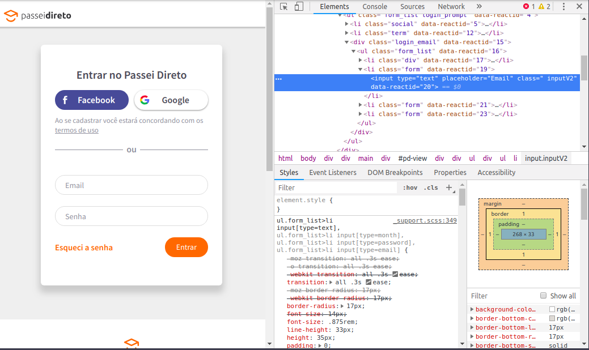
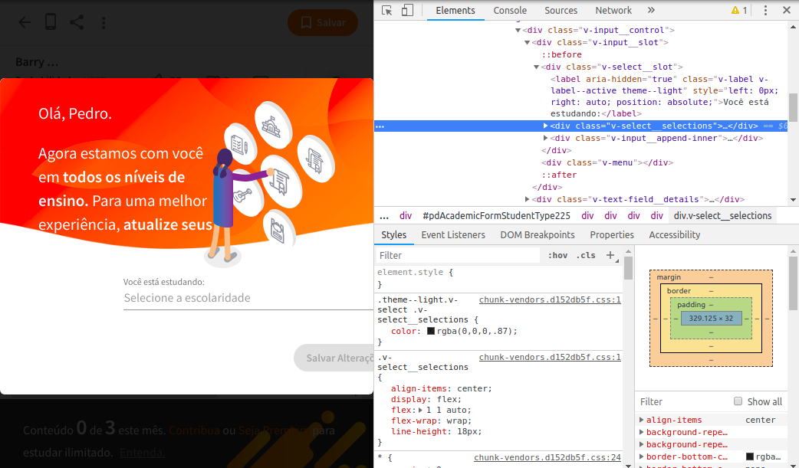

Passei Direto é um site para troca de arquivos. São áreas variadas e fornece livros, resoluções de livros, apostilas, artigos entre outros. É um repositório fora de série, mas tem o problema de ter que subir algum arquivo em “troca” de outro. O ponto desta postagem é como efetuar o download sem ter que fazer essa troca. A qui usaremos ferramentas de automação disponíveis para o R como as bilbiotecas RSelenium e o gmailr. Além deste usaremos o comando convert disponível para sistemas GNU/Linux.
Então segue o tutorial passo a passo.
library(RSelenium) # chamando a biblioteca
# abrindo sistema de navegacao
rD = rsDriver(browser = "chrome", check = F) # abre o navegador sem verificar o driver atual check = F
remDr = rD[["client"]] # inicia a marionete
Sys.sleep(10) # pausa de 10 segundos para carregar tudo 100%
# indo pro site e efetuando o login
remDr$navigate("https://www.passeidireto.com/login") # indo para a página de login
lg = "seu@login" # coloque o seu email cadastrado
pw = "seupass" # coloque a sua senhaNesta tela podemos clicar no campo de Email e depois clicar o botão direito pedindo para inspecionar.

Aqui temos os caminhos de entrada do campo:
Na entrada imput temos o campo placeholder com o valor Email. Veja o script abaixo e compare os caminhos por conta própria das outras entradas.
Aqui fica uma dica. Se estiver usando o chrome então use sendKeysToElement. Caso esteja cmo o firefox use sendKeysToActiveElement.
webElem = remDr$findElement(using = 'xpath', "//input[@placeholder='Email']")
webElem$sendKeysToElement(list(lg))
Sys.sleep(runif(1, 1, 5)) # esperando de 1 a 5 segundos de modo pseudoaleatorio antes de avancar
webElem = remDr$findElement(using = 'xpath', "//input[@placeholder='Senha']")
webElem$sendKeysToElement(list(pw))
Sys.sleep(runif(1, 1, 5))
webElem = remDr$findElement(using = 'xpath', "//button[@class='button orange']")$clickElement()
Sys.sleep(10)Agora vamos para o livro de interesse.
# indo para o livro
remDr$navigate("https://www.passeidireto.com/arquivo/23932176/barry-james-probabilidade-um-curso-em-nivel-intermediario---resolucoes-exercicio")Neste momento pode aparecer alguma tela que impede a plena navegação do bot. Para tanto vamos resolver o problema. Caso não apareça basta excluir esse próximo passo do script.

No mesmo esquema do login clique o botão direito no campo de interesse, digamos Ensino Fundamental.
Caixa de seleção:
Agora a opção Estudos Gerais
Estudos Gerais
webElem = remDr$findElement(using = 'xpath', "//div[@class='v-select__selections']")$clickElement() # caixa de selecao
webElem = remDr$findElement(using = 'xpath', "//div[@class='v-list__tile__title' and contains(text(), 'Estudos Gerais')]")$clickElement() # opcao que contem o texto Estudos GeraisFaça o mesmo esquema para Estado, Cidade e depois Salvar alterações.
# estado
webElem = remDr$findElement(using = 'xpath', "//div[@class='v-list__tile__title' and contains(text(), 'Distrito Federal')]")$clickElement()
# cidade
webElem = remDr$findElement(using = 'xpath', "//input[@placeholder='Digite sua cidade']")
webElem$sendKeysToElement(list('Brasília'))
webElem$sendKeysToElement(list(key = 'enter'))
# salvar alteracoes
webElem = remDr$findElement(using = 'xpath', "//button[@label='Salvar alterações']")$clickElement()Tudo pronto para iniciar o trabalho. Clique o botão direito para ver a imagem do livro.

Repare que temos o padrão para coletar os dados:
https://files.passeidireto.com/c2ba1b4f-5bdd-4528-b30e-feeb666a9c97/bg1.png
{kind=link}
Agora um loop simples resolve tudo que desejamos.
pgs = as.character(1:5) # indexador das paginas. vamos pegar apenas de 1 a 5.
# loop para efetuar o download das paginas
for(i in pgs) {
endereco = paste0("https://files.passeidireto.com/c2ba1b4f-5bdd-4528-b30e-feeb666a9c97/bg", i, ".png")
arq = paste0("/home/pcbrom/Downloads/", i, ".png")
download.file(endereco, arq)
}
# fechar a marionete e parar o webdriver
remDr$close()
rD[["server"]]$stop()Download efetuado. Próximo passo é juntar tudo em um pdf.
comando = "convert /home/pcbrom/Downloads/*.png /home/pcbrom/Downloads/bj.pdf"
system(comando)E o resultado é esse:

Tudo isso é muito bom mas tem como melhorar. O arquivo gerado é um pouco grande 1.3MB. Vamos usar o comando ps2pdf do Linux e diminuir para apenas 191.1kB.
comando = "ps2pdf /home/pcbrom/Downloads/bj.pdf /home/pcbrom/Downloads/bjlite.pdf"
system(comando)
file.size("/home/pcbrom/Downloads/bj.pdf")
[1] 1318862
file.size("/home/pcbrom/Downloads/bjlite.pdf")
[1] 191108Falta enviar por email. Essa parte não precisa de detalhamentos do script. Happy coding!
library(gmailr)
file_attachment = mime() %>%
html_body("") %>%
to("seu@email.com.br") %>%
from("seu@email.com.br") %>%
subject(paste0("Livro consolidado: ", Sys.Date())) %>%
attach_file("/home/pcbrom/Downloads/bjlite.pdf")
send_message(file_attachment)